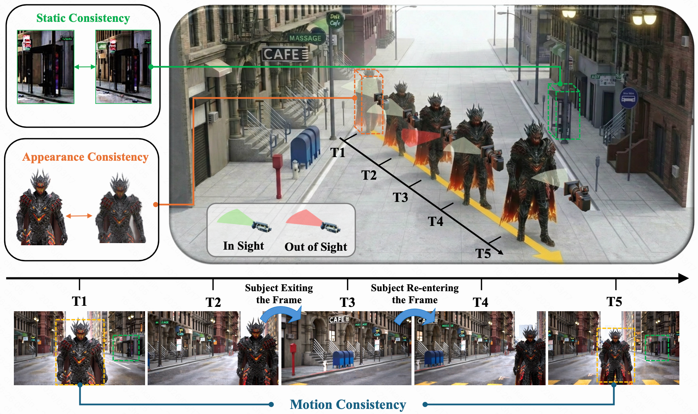
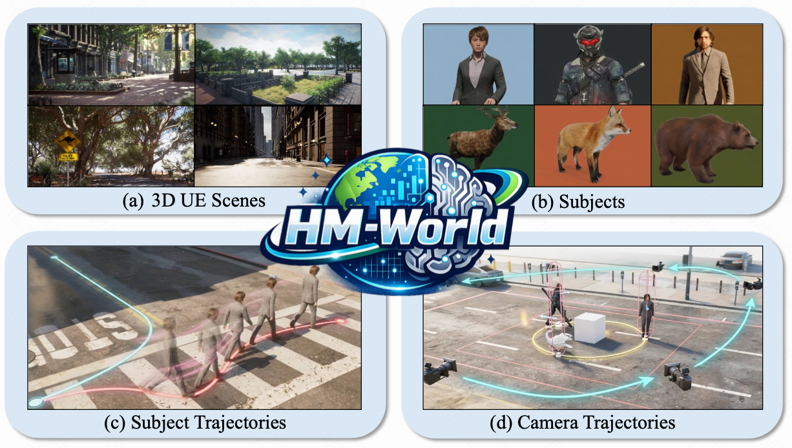
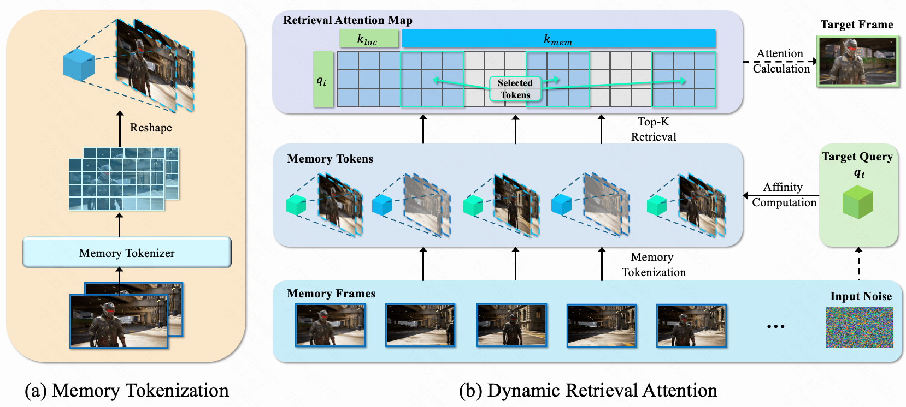

Out of Sight but Not Out of Mind: Hybrid Memory for Dynamic Video World Models
1 Huazhong University of Science and Technology · 2 Kling Team, Kuaishou Technology
Work done during an internship at Kling Team, Kuaishou Technology.
 arXiv
arXiv
Demo of "Out of Sight but Not Out of Mind: Hybrid Memory for Dynamic Video World Models"
Abstract
Video world models have shown immense potential in simulating the physical world, yet existing memory mechanisms primarily treat environments as static canvases. When dynamic subjects hide out of sight and later re-emerge, current methods often struggle, leading to frozen, distorted, or vanishing subjects. We introduce Hybrid Memory, a novel paradigm requiring models to simultaneously act as precise archivists for static backgrounds and vigilant trackers for dynamic subjects, ensuring motion continuity during out-of-view intervals. To facilitate research in this direction, we construct HM-World, the first large-scale video dataset dedicated to hybrid memory. It features 59K high-fidelity clips with decoupled camera and subject trajectories, encompassing 17 diverse scenes, 49 distinct subjects, and meticulously designed exit-entry events to rigorously evaluate hybrid coherence. Furthermore, we propose HyDRA, a specialized memory architecture that compresses latents into memory tokens and utilizes a spatiotemporal relevance-driven retrieval mechanism. By selectively attending to relevant motion cues, HyDRA effectively preserves the identity and motion of hidden subjects. Extensive experiments on HM-World demonstrate that our method significantly outperforms state-of-the-art approaches in both dynamic subject consistency and overall generation quality.
Introduction
While recent video world models excel at simulating static environments, they share a critical blind spot: the physical world is dynamic. When moving subjects exit the camera's field of view and later re-emerge, current models often lose track of them—rendering returning subjects as frozen statues, distorted phantoms, or letting them vanish entirely.
To bridge this gap, we introduce Hybrid Memory, a novel paradigm that requires models to simultaneously act as precise archivists for static backgrounds and vigilant trackers for dynamic subjects. A true world model must not only remember a subject's appearance but also mentally predict its unseen trajectory, ensuring visual and motion continuity even during out-of-view intervals.

HM-World Dataset
A dataset dedicated to hybrid memory.
To facilitate research in this new paradigm, we introduce HM-World, the first large-scale video dataset purpose-built to train and evaluate hybrid memory capabilities.
HM-World contains 59,225 high-fidelity clips rendered in Unreal Engine 5 with decoupled camera trajectories and subject motions, creating many natural out-of-view intervals. The dataset covers 17 diverse scenes and 49 distinct subjects (humans and animals), designed subject trajectories, and 28 back-and-forth camera motions. By creating countless natural instances where subjects slip into unseen margins before re-emerging, HM-World provides a rigorous benchmark for evaluating spatiotemporal coherence in complex dynamic environments.
Dataset example 1
Dataset example 2
Dataset example 3
Dataset example 4

HyDRA Method
Hybrid Dynamic Retrieval Attention for consistent re-entry.
We propose HyDRA (Hybrid Dynamic Retrieval Attention), a memory mechanism designed to seek hidden subjects and preserve dynamic consistency while maintaining static background coherence under camera motion.
HyDRA first compresses latents into compact, motion-aware memory tokens using a memory tokenizer. During generation, a spatiotemporal relevance-driven retrieval module computes affinity between target queries and memory keys, selects top-k relevant tokens. This selective retrieval pulls crucial motion and appearance cues into the generation process, helps the model “rediscover” hidden subjects and continue their trajectories after out-of-view intervals.

Generation Results
BibTeX
@article{chen2026out,
title = {Out of Sight but Not Out of Mind: Hybrid Memory for Dynamic Video World Models},
author = {Chen, Kaijin and Liang, Dingkang and Zhou, Xin and Ding, Yikang and Liu, Xiaoqiang and Wan, Pengfei and Bai, Xiang},
journal = {arXiv preprint arXiv:2603.25716},
year = {2026}
}